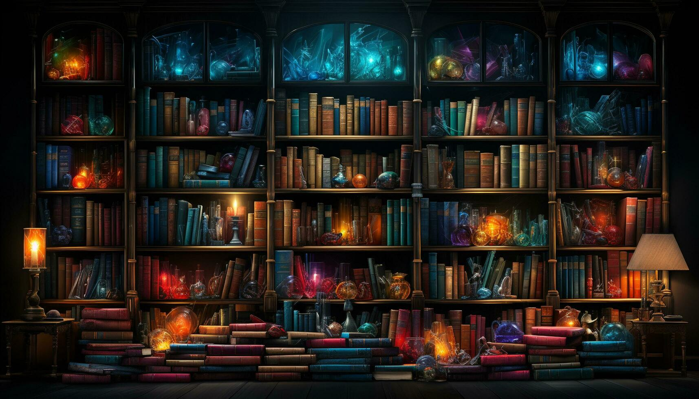

BOOK MUSEUM

HOME
 MORE...
MORE...
 GOALS
GOALS
the biggest library in the world :)
- Name: Library of Congress
- Location: Washington, D.C., United States
- Size: The library occupies 3 buildings with over 168 million items total.
- Collection: The largest library collection in the world with books, manuscripts, photos, maps, films, audio/video recordings, music, and other formats.
- Subjects: Covers virtually all topics, especially strong in law, medicine, history, geography, politics, culture
- Languages: Materials in over 470 languages.
- History: Founded in 1800 to serve the United States Congress. Built permanent building in 1897. Steadily grew collection over decades through purchases, donations, copyright deposits.
- Services: Provides research assistance for Congress and general public. Offers internships, grants, online resources, events/exhibits.
- Interesting Facts: Has over 38 million books, 3.6 million recordings, 14 million photographs, 5.5 million maps, 8.1 million pieces of sheet music. The main reading room is 160,000 square feet with a 50 foot ceiling.